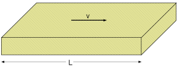
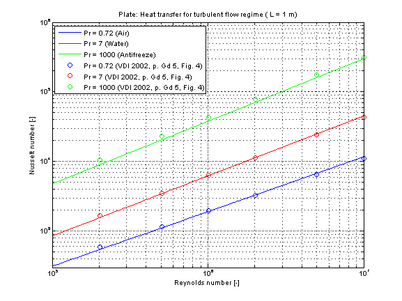

kc_turbulent |
|
Information
This information is part of the Modelica Standard Library maintained by the Modelica Association.
Calculation of the mean convective heat transfer coefficient kc for a hydrodynamically developed turbulent fluid flow over an even surface.
Functions kc_turbulent and kc_turbulent_KC
There are basically three differences:
- The function kc_turbulent is using kc_turbulent_KC but offers additional output variables like e.g. Reynolds number or Nusselt number and failure status (an output of 1 means that the function is not valid for the inputs).
- Generally the function kc_turbulent_KC is numerically best used for the calculation of the mean convective heat transfer coefficient kc at known mass flow rate.
- You can perform an inverse calculation from kc_turbulent_KC, where an unknown mass flow rate is calculated out of a given mean convective heat transfer coefficient kc
Restriction
- constant wall temperature
- turbulent regime (Reynolds number 5e5 < Re < 1e7)
- Prandtl number 0.6 ≤ Pr ≤ 2000
Geometry

Calculation
The mean convective heat transfer coefficient kc for flat plate is calculated through the corresponding Nusselt number Nu_turb according to [VDI 2002, p. Gd 1, eq. 2]:
Nu_turb = (0.037 * Re^0.8 * Pr) / (1 + 2.443/Re^0.1 * (Pr^(2/3)-1))
and the corresponding mean convective heat transfer coefficient kc :
kc = Nu_turb * lambda / L
with
| cp | as specific heat capacity at constant pressure [J/(kg.K)], |
| eta | as dynamic viscosity of fluid [Pa.s], |
| kc | as mean convective heat transfer coefficient [W/(m2.K)], |
| lambda | as heat conductivity of fluid [W/(m.K)], |
| L | as length of plate [m], |
| Nu_turb | as mean Nusselt number for turbulent regime [-], |
| Pr = eta*cp/lambda | as Prandtl number [-], |
| rho | as fluid density [kg/m3], |
| Re = v*rho*L/eta | as Reynolds number [-]. |
Verification
The mean Nusselt number in turbulent regime Nu representing the mean convective heat transfer coefficient kc for Prandtl numbers of different fluids is shown in the figure below.

References
- VDI:
- VDI - Wärmeatlas: Berechnungsblätter für den Wärmeübergang. Springer Verlag, 9th edition, 2002.